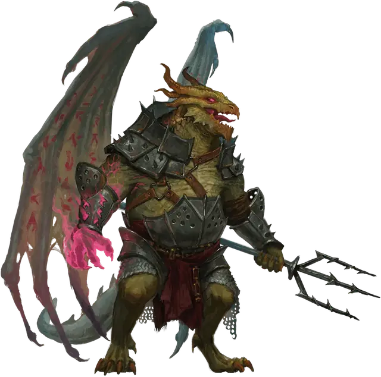

Драконид маг
Draconian Mage
Средний Монстр, любое мировоззрение

Класс Доспеха 15 (природный доспех)
Хиты 40 (9к8)
Скорость 30 футов
| мод | спас | ||
|---|---|---|---|
| СИЛ | 14 | +2 | +2 |
| ЛОВ | 10 | +0 | +0 |
| ТЕЛ | 11 | +0 | +0 |
| мод | спас | ||
|---|---|---|---|
| ИНТ | 11 | +0 | +2 |
| МДР | 10 | +0 | +2 |
| ХАР | 14 | +2 | +4 |
Чувства тёмное зрение 60 футов, пассивное Восприятие 10
Языки Общий, Драконий
Опасность 2 (450 опыта)
Бонус мастерства +2
Особенности
Предсмертные муки. Когда хиты драконида уменьшаются до 0, его чешуя и плоть немедленно сморщиваются, а кости взрываются. Каждое существо в пределах 10 фт. от него должно преуспеть спасброске Ловкости Сл 10, иначе получит 9 (2к8) урона силовым полем.
Воздушное скольжение. Когда драконид падает и дееспособен, он вычитает до 100 футов от падения при расчете урона от падения, и он может перемещаться на 2 фт. по горизонтали за каждый 1 фт., на который он опускается.
Действия
Мультиатака. Драконид совершает две атаки Трезубцем или Некротическим лучом.
Трезубец. . Рукопашная или Дальнобойная атака оружием: +4 к попаданию, досягаемость 5 фт. или дистанция 20/60 фт., одна цель. Попадание: 5 (1к6+2) колющего урона или 6 (1к8+2) если используется двумя руками для совершения рукопашной атаки.
Использование заклинаний. Драконид накладывает одно из следующих заклинаний, не требующее материальных компонентов и используюя Харизму в качестве базовой характеристики (Сл спасброска от заклинаний 12):
• 1/день каждое: увеличение/уменьшение [enlarge/reduce], невидимость [invisibility], зловонное облако [stinking cloud].
Некротический луч. Дальнобойная атака заклинанием: +4 к попаданию, досягаемость 60 фт., одна цель. Попадание: 10 (3к6) урона некротической энергией.
Описание
Дракониды, рожденные из яиц бронзовых, зеленых и изумрудных драконов, обладают способностью владеть магией. Они часто возглавляют небольшие группы драконидов пехотинцев, используя свою магию для снайперской стрельбы на поле боя или помогая своим союзникам в вторжениях и атаках. У них есть крылья, которые позволяют им парить во время падения.
Когда дракониды маги умирают, их плоть сморщивается до того, как их кости взорвутся, разбрасывая поток магических осколков во все стороны.
В мире Кринн дракониды маги, сформированные из бронзовых драконьих яиц, называются драконидами бозака.
Дракониды - двуногие монстры, рожденные из драконьих яиц, которые были испорчены или искажены могущественной магией. Чаще всего эта развращение является преднамеренным актом, работой честолюбивого тирана, стремящегося превратить украденные яйца в драконидскую армию. Одно испорченное яйцо дает несколько драконидов одного и того же вида. На первый взгляд драконида можно принять за драконорожденного, хотя у большинства видов драконидов есть крылья.
Когда дракониды умирают, они не уходят тихо. Вместо этого их безжизненные тела высвобождают последний акт магического неистовства.